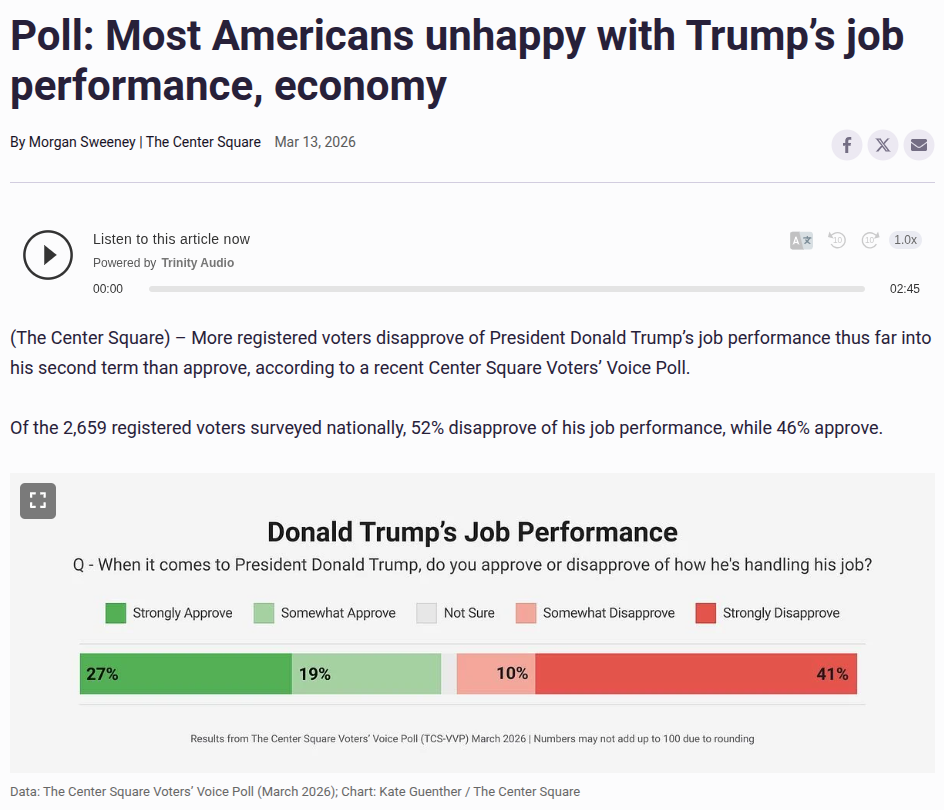
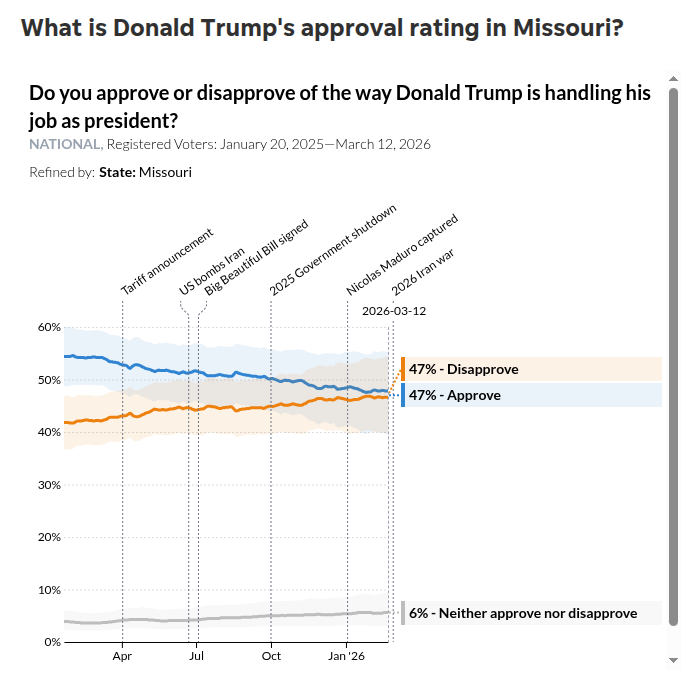
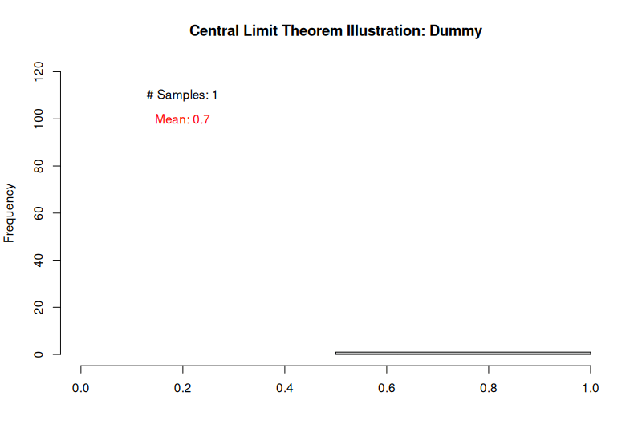
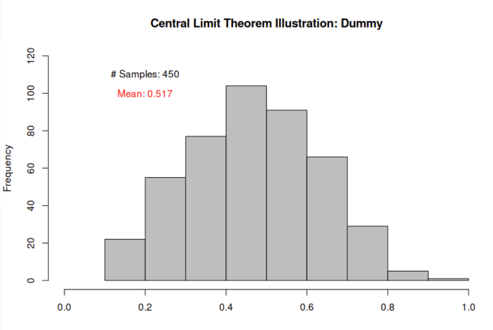
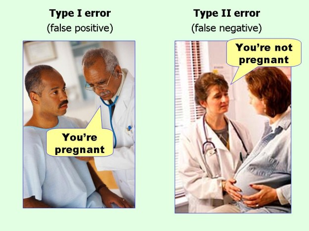
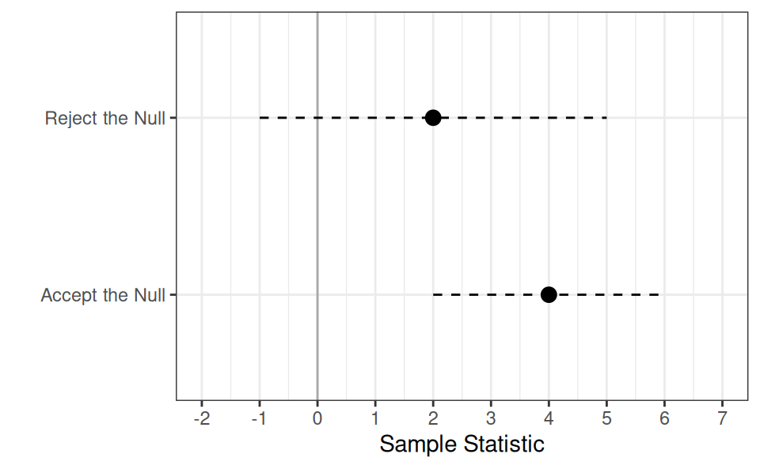
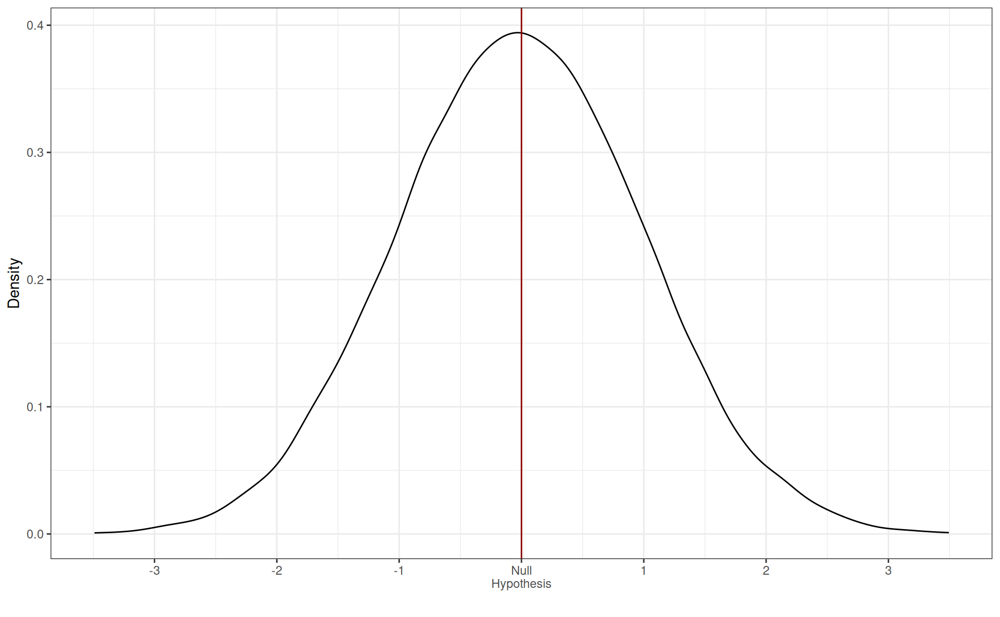
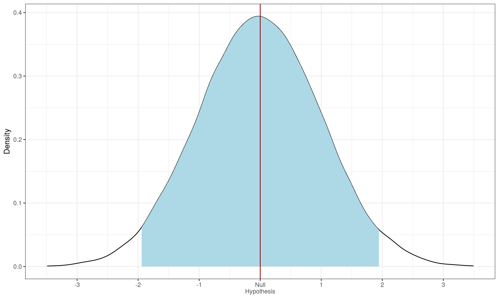
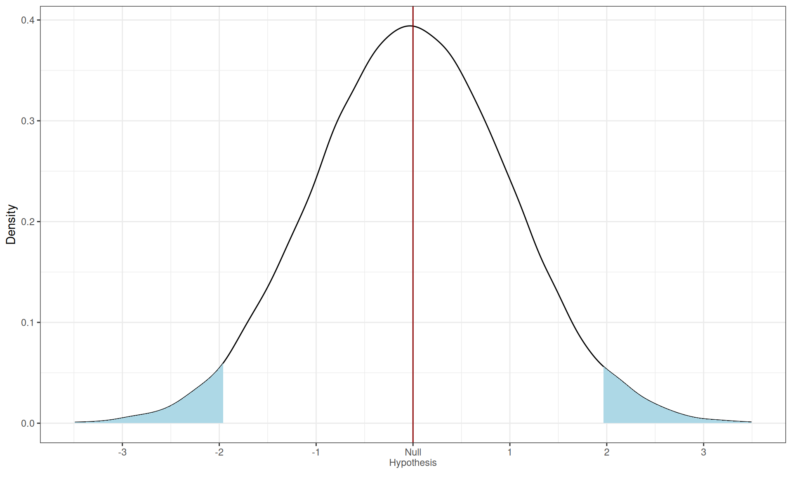
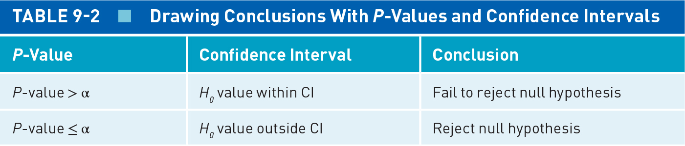

Today’s Agenda
Foundations of Statistical Inference
- Null hypothesis testing
Justin Leinaweaver (Spring 2026)
Defining Statistics: Level 2
Statistics helps us draw inferences from sample to population

Statistical Inference: The Intuitions
\[ \text{Sample Statistic} = \text{Pop. Parameter} \pm \text{Random Sampling Error} \]
\[ \text{Random Sampling Error} = \frac{\text{Variation component}}{\text{Sample size component}} \]
Statistical Inference: The Intuitions

Statistical Inference: The Intuitions

Quantifying Uncertainty
\[ \text{SE of the mean} (\bar{x}) = \frac{\sigma_x}{\sqrt{n}} \]
\[ \text{SE of a proportion} = \frac{\sqrt{p \times (1-p)}}{\sqrt{n}} \]
\[ \text{95% CI} = \text{Sample Statistic} \pm (1.96 \times \text{Standard Error}) \]

Standardizing Measures: Z-Score
Transform observed sample values:
\[ z_i = \frac{x_i - \bar{x}}{s_x} \]
Transform sample statistics:
\[ \text{Z score} = \frac{\bar{x} - \mu}{\text{SE of } \bar{x}} \]

Simulate a Population
Take a Single Sample
sample1
Heads Tails
7 3 sample1
Heads Tails
0.7 0.3 How “precise” is our sample statistic?
\[ \text{SE} = \frac{\sqrt{.7 \times .3}}{\sqrt{10}} = .145 \]
\[ \text{95% CI, Low} = .7 - 1.96 \times .145 = .42 \]
\[ \text{95% CI, High} = .7 + 1.96 \times .145 = .98 \]


Connecting the Dots of Inference
[1] 0.1588092\[ \text{SE (Sample 1 %)} = \frac{\sqrt{.7 \times .3}}{\sqrt{10}} = .145 \]
\[ \text{SE (All Samples %)} = \frac{\sqrt{.52 \times .48}}{\sqrt{10}} = .158\]
Simulation SD = .158
Estimated SE = .158
Pollock & Edwards (2026) Ch 8
Exercise 6
SE = 4 / √400 = 0.2
95% CI = 6 ± 2 × 0.2 = [5.6, 6.4]
Pollock & Edwards (2026) Ch 8
Exercise 7
SE = 8 / √100 = 0.8
95% CI = 47 ± 2 × 0.8 = [45.4, 48.6]
Pollock & Edwards (2026) Ch 9
Null Hypothesis Testing
Specifying Research Hypothesis and Null Hypothesis
Setting Threshold for Statistical Significance
Estimating Parameters With Sample Data
P-Value and Confidence Interval Approaches
Drawing Conclusions
1. Specify your research and null hypotheses
Exercise 1
How does age predict participation in political protests?
Null hypothesis?
Directional hypothesis?
Non-Directional hypothesis?
2. Set a threshold for statistical significance
Null Hypothesis: There is no relationship between age and participating in a political protest
2. Setting a Threshold for Statistical Significance

3. Estimating Parameters With Sample Data
| View of the Economy | Democrats | Independents | Republicans |
|---|---|---|---|
| 1. Very good | 30.6 | 81.4 | 93.2 |
| 2. Good | 23.4 | 60.9 | 85.1 |
| 3. Neither good nor bad | 13.7 | 40.9 | 76.2 |
| 4. Bad | 5.6 | 21.9 | 67.8 |
| 5. Very bad | 2.9 | 14.0 | 59.1 |
4. Use inferential statistics to evaluate the threshold
Option 1: The Confidence Interval Approach
\[ \text{95% CI} = \text{Sample Statistic} \pm (1.96 \times \text{Standard Error}) \]

4. Use inferential statistics to evaluate the threshold
Option 2: The P-Value Approach
- Assuming the null hypothesis is TRUE, how much random sampling error would it take to get your sample statistic?
4. Use inferential statistics to evaluate the threshold
Option 2: The P-Value Approach

4. Use inferential statistics to evaluate the threshold
Option 2: The P-Value Approach

4. Use inferential statistics to evaluate the threshold
Option 2: The P-Value Approach

5. Draw conclusions and communicate your findings

Pollock & Edwards (2026) Ch 9
Null Hypothesis Testing
Specifying Research Hypothesis and Null Hypothesis
Setting Threshold for Statistical Significance
Estimating Parameters With Sample Data
P-Value and Confidence Interval Approaches
Drawing Conclusions
For Next Class
Pollock and Edwards (2026): Chapter 9
Read p229-244
Submit selected exercises to Canvas